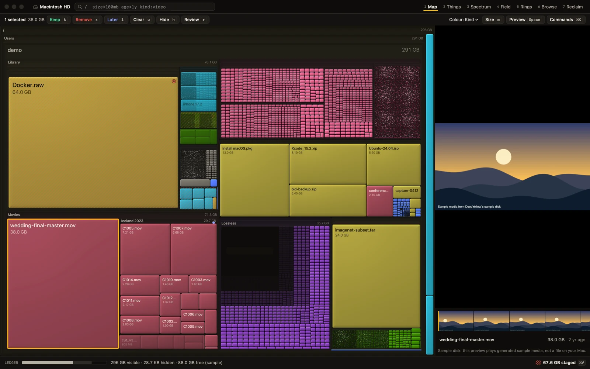
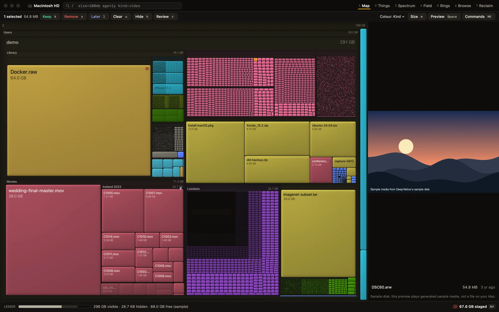
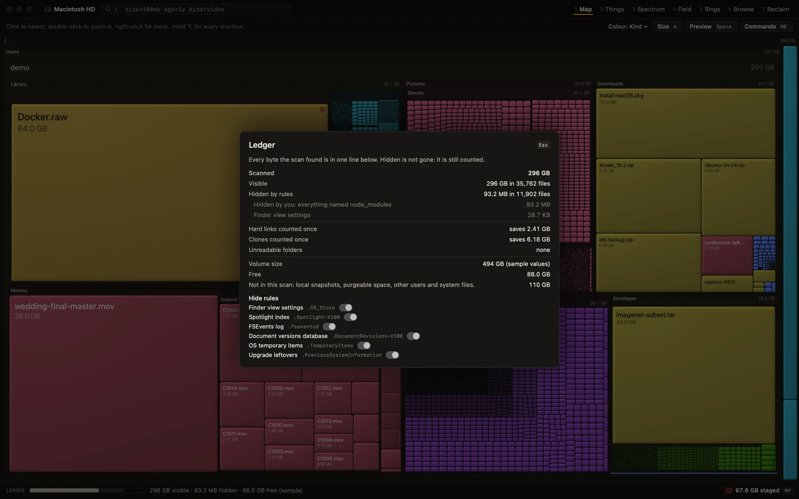
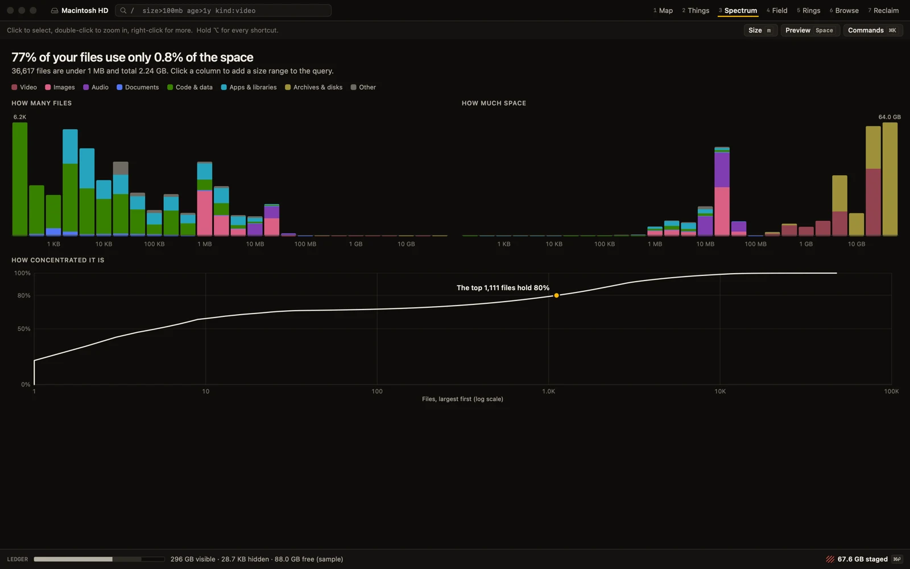
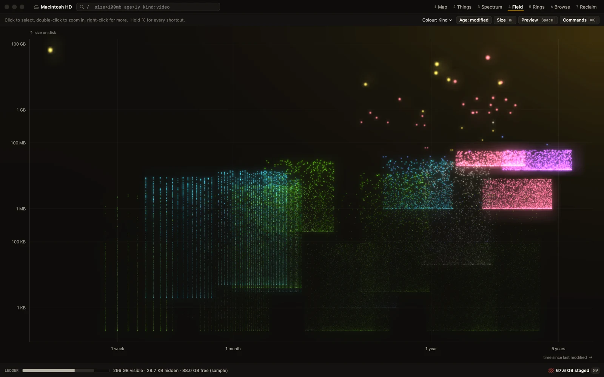
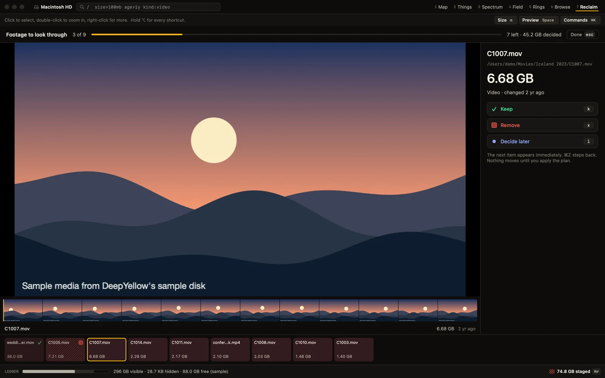
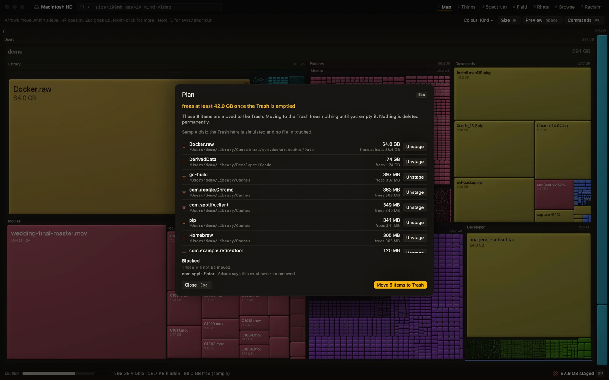
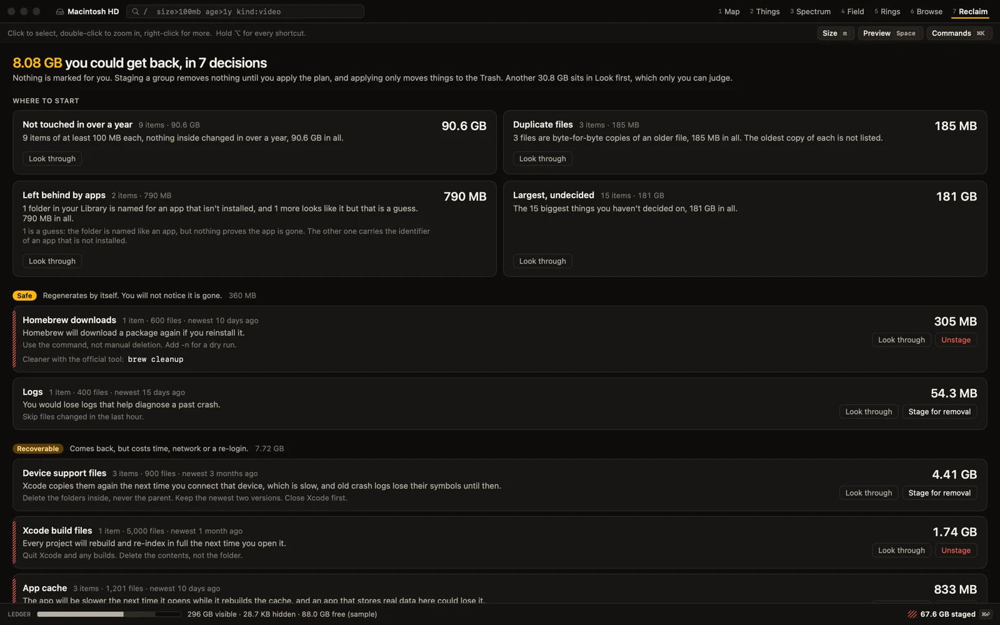

See what's on your disk and what you can remove safely.
There are a bunch of disk usage tools out there, and none of them did what I wanted. I wanted a map I could zoom from the whole disk down to a single file, a list that ranks a 400 MB file next to a 410 MB folder, and a Ledger that accounts for every byte. So I built DeepYellow. Nothing is removed until you apply a plan, and even then it only moves things to the Trash.
It needs macOS 15 or later and runs on Apple silicon and Intel. The build is not notarized, so macOS asks you to approve it once, and here is how.
- No network code
- No telemetry
- Trash only, never permanent
- CLI is read-only
- Read-only mode for real scans
- Open source, MIT
A real scan where nothing can be moved.
I wouldn't use a new tool to delete things on my own machine before I trusted it, and I don't expect you to either. If you start the app in read-only mode, it scans your actual disk, so the sizes, the map and the advice are all real, but nothing can be moved to the Trash. Once you have seen what DeepYellow thinks of your disk, you can decide whether to trust it with a Plan. If you would rather start with a made-up disk, --demo starts a sample one.
$ deepyellow ~ --read-only real scan, real numbers, nothing can be moved $ deepyellow --demo a made-up disk, always a new window
Gold means you can get the space back.
The canvas is near-black and the file kinds are muted, so that deep yellow can stand for one thing: space you could get back. If you switch to Safety mode, everything else goes dark, and what keeps glowing is what is safe to remove or will rebuild by itself. You can see the answer before you have read a single label.
But how does it know what is safe? It doesn't always, and it tells you when it doesn't. Every item carries one of four tiers, safe, rebuild, review or never offered, along with what removing it would cost you in plain words. When the evidence is thin the item stays at review, and it never gets rounded up to safe. For most personal files there is no advice to give, and that is what the app shows you.
A 400 MB file next to a 410 MB folder.
Say I have a 400 MB file and a 410 MB folder. They are about the same size, so I want to see them next to each other, but trees make you choose a depth and flat lists make you choose files. Things cuts the tree at a size instead. Something gets listed once it is at least the threshold and can't be split into anything that big, which means nothing is counted twice and the list adds up exactly to the total.
If you drag the slider, your disk goes from a dozen things to thousands of things. Apps, node_modules, .git and the like stay whole until you ask to open them.
Asking your disk a question in SQL.
I wanted to slice and dice my files with SQL and have the UI respond to it, so a SQL result here isn't just a table. If the result includes id, it becomes the set that the Map, Things, Spectrum, Field and Rings all show, which means the query on the right turns each of them into just those 100 files. If you use ids(id) in a GROUP BY, you can click a group to narrow down to it.
It is SQLite's SELECT dialect, and it is read-only: the tests make sixteen write attempts and all of them get refused. SQL never marks or removes anything either, since your marks still go through selection and k x l u. To give an idea of the speed, grouping 4,856,132 items by kind took 729 ms on a synthetic disk, in a release build on one machine.
-- press s, then Cmd-Return SELECT id, name, human(size) AS readable FROM files ORDER BY size DESC LIMIT 100
The same engines from the CLI, read-only.
I wanted to run this from the CLI with a path as well. deepyellow things, reclaim, spectrum, dupes and sql print their results with truecolor bars on a terminal and as plain text when piped, and if you add --json you get something a script can use. You won't find a delete command in there, and that was a deliberate choice.
$ deepyellow things ~/Downloads --min 1mb --top 5 Things under ~/Downloads · 47.2 MB total · cut at 1.00 MB · 5 rows ████████████████████ 13.6 MB 29% Install macOS.pkg ████████████▎ 8.39 MB 18% Xcode_15.2.zip █████████▎ 6.29 MB 13% Ubuntu-24.04.iso █████████▎ 6.29 MB 13% old-backup.zip █████████▎ 6.29 MB 13% design-handoff/Ubuntu-copy.iso
Viewing a file before you decide.
I wanted to view a file inside the tool itself, and only then decide whether to keep it. Press Space in any lens and a pane opens next to it, where video plays with a filmstrip you can scrub, images decode to screen size, audio shows a waveform, and PDFs and text render in place. Reading a file never changes it, and an iCloud placeholder is never downloaded by accident.


Seven lenses on one selection.
A lens is what I call each way of looking at your disk. Map, Things, Spectrum, Field, Rings, Browse and Reclaim all read the same data and share one query, so you keep your place when you switch between them. All the screenshots here are of the real app running on a built-in demo disk, so there are no real files in them.






How does it decide? There is no AI involved.
The app wouldn't have that kind of intelligence, and I didn't want it guessing about my files. A built-in rule table says what a place is, what removing it costs, and the official cleanup command where one exists. File kinds come from extensions, system type data and a look at the first bytes of a file. Duplicates are exact: size first, then partial hashes, and then a full SHA-256.
Let's look at what that gets us. On one 188 GB home folder with 2.18 million files, the rules and file signatures brought unknown bytes from 45% down to 12%. About 65% of the bytes in there still have no safety advice, and that part only you can judge, even though the factual worklists cover 68 GB of it. That is one folder, so please don't read it as a promise about yours.
Nothing is pre-marked for removal, ever. Your marks are staged like git add, the staged total is always on screen, and nothing touches the disk until you apply.
Regenerates on its own with no visible loss, like old logs.
Comes back, but at a cost of time, network or a login, like build files.
May hold something of yours, so you have to look.
Not offered, whatever you select.
How fast is it?
I wanted a UI that doesn't get in the way, and a slow UI gets in the way. These are the measurements so far.
under 3 ms
For a cut on a 4.86 million node tree.
23 to 42 ms
On the same 4.86 million nodes.
about 200 fps
Estimated at p95 on an M4, rendered offscreen, 4.86 million nodes.
about 150k files/s
On a home folder of 2.18 million files, while the machine was under load.
Your numbers will differ with your disk and Mac. When nothing is changing DeepYellow doesn't draw anything, so idle costs no GPU.
Three ways to install it, depending on how much you trust me.
1. Download the app
A universal disk image for Apple silicon and Intel. Drag DeepYellow to Applications.
You can verify it with SHA256SUMS. macOS will ask you to approve it once.
2. One command
This downloads the latest release, checks its checksum, installs to ~/Applications and links the CLI, and then prints exactly what it did.
curl -fsSL https://raw.githubusercontent.com/midhunkrishna/deepyellow/master/scripts/install.sh | shPiping curl into a shell deserves some suspicion, so read it first or use --dry-run. See install.
3. Build it yourself
Anyone can clone it and run make app, and all you need is the Swift 6 toolchain. This is the one that doesn't ask you to trust a binary.
git clone https://github.com/midhunkrishna/deepyellow
cd deepyellow && make appThe build isn't notarized, so macOS asks first.
Notarization needs a paid Apple developer account, and DeepYellow is a free open source project that doesn't have one. The build is signed ad hoc, so Gatekeeper can't tell who made it and stops the first launch. There is nothing wrong with the download, and if you would rather skip the question altogether, you can build it from source.
Since macOS 15, Control-click then Open no longer gets around this, so use the steps on the right.
- Try to open it once. Double-click DeepYellow in Applications. When the message appears, click Done (not Move to Trash).
- Open System Settings, Privacy & Security. Scroll to the Security section, where you will see "DeepYellow was blocked to protect your Mac".
- Click Open Anyway, then confirm with your password or Touch ID. The button stays available for about an hour after the attempt, so if it is missing, try to open the app again.
Prefer the Terminal? This removes the quarantine flag macOS put on the download:
xattr -dr com.apple.quarantine /Applications/DeepYellow.appAll it does is delete the "downloaded from the internet" marker, so Gatekeeper no longer assesses the app on launch. It doesn't verify anything and it doesn't change any code, so check the checksum first.
What it doesn't do.
- Not notarized. You approve it once, as above.
- Needs Full Disk Access for a complete scan. Without it, protected folders are counted as unreadable and shown that way, and they are never silently left out.
- macOS 15 or later. It is dark mode only in this version, which was a deliberate choice.
- No advice for most personal files. Photos, documents and downloads are yours to judge, and a rule table can't do that for you.
- No AI. It has rules and measured facts, and you decide.
- No live updates or rescan of one folder yet. A scan is a snapshot, so you rescan to refresh it.
Well, that is it folks. The source is on GitHub.